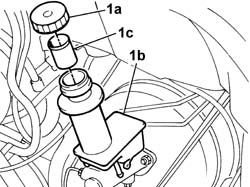

3330C40 brake fluid reservoir plug - r + r
- Path
- Procedures > 33 BRAKES > 3330 HYDRAULIC BRAKE SYSTEM > 3330C BRAKE PUMP, RESERVOIR AND LOAD PROPORTIONING VALVE > 3330C40 brake fluid reservoir plug - r + r
- Kind
- repair procedure (removal / refitting; the operation number is the code)
- Applies to
- engines: 1.4 8v, 1.6 16v, 1.3 JTD 16V, 1.9 JTD 8V; all production periods
- Interactive page
- https://sloeber94.github.io/elrnDB-fDbl/en/#/2584661
Applies to: engines: 1.4 8v, 1.6 16v, 1.3 JTD 16V, 1.9 JTD 8V; all production periods
 Removing
Removing
 Refitting
RefittingOpen the bonnet.
1. Undo cap (1a) and remove from brake fluid reservoir (1b); mesh filter (1c) is located beneath the cap.

Applies to: engines: 1.4 8v, 1.6 16v, 1.3 JTD 16V, 1.9 JTD 8V; all production periods
Refitting
RemovingFit the mesh filter
Tighten the cap on the brake fluid reservoir.
Close the bonnet lid.
Topics that link to this page (17)
- 1820B21 (Pump) - MASTER CYLINER R.R. for right hand drive versions
- 1820B41 hose from clutch reservoir to master cylinder (pump) - r r for rh drive versions
- 3330C10 (PUMP) - MASTER CYLINDER R.R.
- 3330C12 (PUMP) - MASTER CYLINDER R.R. for right hand drive versions
- 3330C30 brake fluid reservoir - r + r and wash inside
- 3330C34 brake fluid reservoir - r + r and wash inside - versions with r/h drive and abs
- 3330C37 pipe from brake fluid reservoir to master cylinder (pump) - r r for rhd versions
- 3330C41 brake fluid resevoir cap - r r for versions with abs systems
- 3330D02 brake servo/brake pump assembly - r r
- 3330D10 brake servo - r+r - includes separation from master cylinder (pump)
- 3330D15 BRAKE SERVO - R.R. FOR RIGHT HAND DRIVE VERSIONS AND AIR CONDITIONING - INCLUDES. SEPARATING MASTER CYLINDER
- 3330E10 FLEXIBLE PIPE (one), left or right, to front brake calipers - R.R .
- 3330E34 Intermediate FLEXIBLE PIPE (one), left or right, to rear brakes - R.R.
- 3330E52 RIGID PIPE from master cylinder to LEFT front brake - R.R.
- 3330E53 RIGID PIPE from master cylinder to RIGHT front brake - R.R.
- 3330E59 RIGID PIPE from load proportioning valve/ to intermediate flexible pipe or connector - R.R.
- 3330E69 RIGID PIPE (one), left or right, to the rear wheel cylinders - R.R.